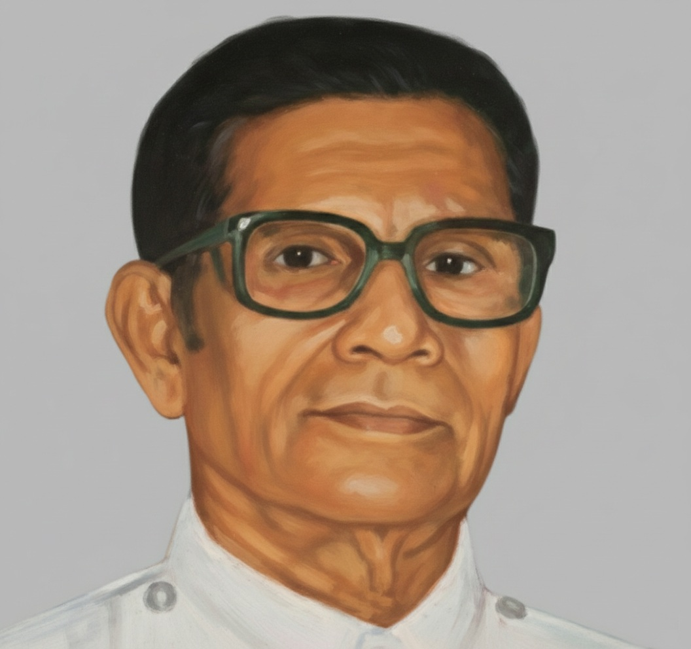

Parish Vicars |

With love and prayers,
Rev. Laji Varughese
Vicar - Bangalore Parish
Grace and peace to you in the name of our Lord and Savior Jesus Christ.
As we reflect on the journey of our Bangalore Parish, I am filled with gratitude for the unwavering faith, dedication, and deep unity that have brought us to this moment. We stand firmly on the shoulders of those who came before us—our dedicated founding members and past leaders—whose vision, sacrificial giving, and fervent prayers laid the foundation for this vibrant spiritual community. It is our joy and responsibility to honor their legacy by continuing to build a church firmly rooted in the authority of Scripture, genuine love, tireless service, and earnest prayer.
In a rapidly changing world that often feels uncertain and isolating, may our fellowship at STECI Bangalore be a consistent beacon of hope and Evangelical truth. I encourage each of you to deepen your commitment to discipleship, support one another through life's challenges, and grow in the knowledge of our Lord. Let us extend our hands in mission and outreach—both within our city of Bengaluru and to the broader mission fields of the STECI.
I warmly invite you to be active participants in every aspect of our parish life—whether through engaging in worship, teaching in Sunday School, serving in the Sevini Samajam, or simply by being consistently present for one another in fellowship. Your presence is essential, and your spiritual gifts are needed here.
I extend a heartfelt welcome to all who seek a spiritual home rooted in Word of God and Evangelical truth. May God bless your journey with the Bangalore Parish and strengthen our common purpose.
May the Lord bless you and keep you. May His face shine upon you and give you peace.
Our parish has been blessed with dedicated spiritual shepherds since 1980. Each vicar has contributed uniquely to building our community of faith, leaving lasting impacts on generations of believers. We remain grateful for their pastoral care and guidance, which continue to inspire us today.

Late Rev. Dr. T. C. George
1980 - 1981
Bishop Dr. M. K. Koshy
1981 - 1984

Bishop Dr. Thomas Abraham
1984 - 1987
Very Rev. C. K. Jacob
1987 - 1989
Rev. Dr. Thomas Varghese
1989 - 1990 & 1991 - 1994
Rev. Varghese Philip
1990 - 1991 & 1994 - 1996
Rev. John M Prasad
1996 - 1996

Most Rev. Dr. Abraham Chacko
1996 - 1998
Rev. K. S. James
1998 - 2002
Late Rev. P. K. Koruth
2002 - 2006
Rev. Biju Thomas
2006 - 2007 & 2019 - 2022
Rev. Thomas Thottathil
2007 - 2009
Rev. P. M. Joseph
2009 - 2013
Rev. Shaji Alexander
2013 - 2016
Rev. Moncy Varghese
2016 - 2019
Bishop Dr. C. V. Mathew
Late Rev. M. I. Thomas
Rev. V. M. Mammen
Late Rev. M. Cherian
Late Rev. C. A. Chacko
Rev. P. M. Philip
Rev. P. T. Mathew
Rev. Sunny C John
1994 - 1996
Assistant Vicar
Rev. K. J. Titus
1994 - 1996
Assistant Vicar
Rev. Dr. Prakash Abraham Mathew
Rev. Dr. Varughese John
2021 - 2024
Assistant Vicar
Rev. Puttuswamy
Bellary Mission